Inhalt Index DeskTop Bronstein

 Wahrscheinlichkeitsrechnung und Mathematische Statistik Wahrscheinlichkeitsrechnung Stetige Verteilungen
Wahrscheinlichkeitsrechnung und Mathematische Statistik Wahrscheinlichkeitsrechnung Stetige Verteilungen


heißt normalverteilt, genauer (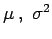)-normalverteilt. Die Funktion
| 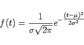 | (16.71) |
heißt die Dichte der Normalverteilung. Sie nimmt an der Stelle 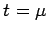 ihr Maximum an und hat Wendepunkte bei 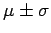 (s. Abbildung):
| 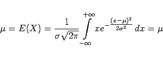 | (16.72a) |
und
| 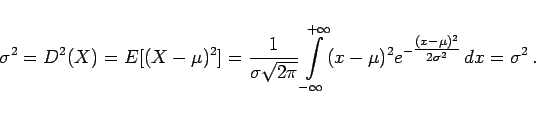 | (16.72b) |
Sind die Zufallsveränderlichen X1 und X2 unabhängig und normalverteilt mit den Parametern 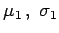 bzw. 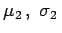, so ist auch die Zufallsveränderliche 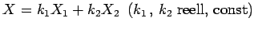 normalverteilt mit den Parametern 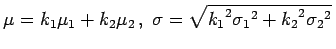.
Durch die Substitution
| 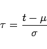 |
in (16.70) läßt sich die Wahrscheinlichkeit 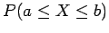 mit Hilfe der normierten Normalverteilung  gemäß
gemäß
| 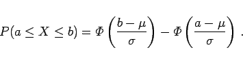 | (16.73) |
berechnen.